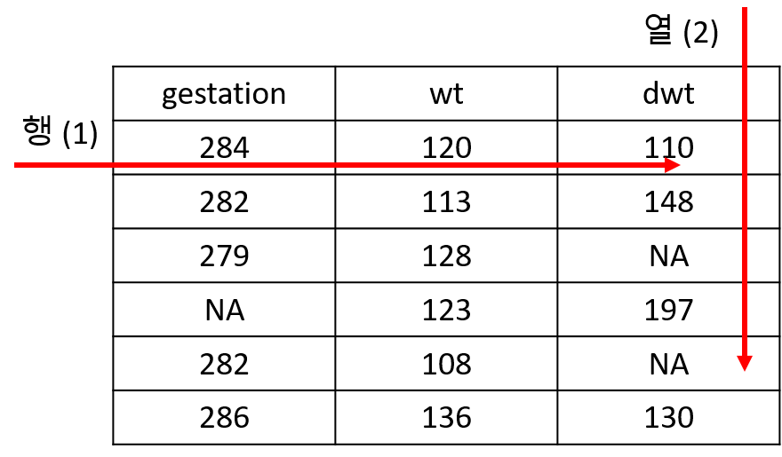

library(tidyverse)
data(msleep)
str(msleep)
glimpse(msleep)
mydf <- data.frame(brainwt = msleep$brainwt,
sleep_total = msleep$sleep_total)
class(mydf)
mydf <- msleep[,c("brainwt", "sleep_total")]
class(mydf)
mydf <- msleep |> dplyr::select(brainwt, sleep_total)
class(mydf)5 Data transform classic
5.1 Introduction
일반적인 데이터 분석은 데이터 전처리(변환), 가시화, 모델링(통계분석)의 반복적인 수행으로 진행될 수 있습니다. R에서는 data.frame 형식의 데이터 타입이 주로 사용되며 (최근 tibble형식) 따라서 data.frame 기반의 데이터를 다루기 위한 다양한 함수를 익힐 필요가 있습니다. 이번 강의에서는 data.frame 데이터를 읽거나 쓰는 함수들과 함께 데이터 전처리를 (변환) 위한 함수들을 배워보겠습니다.
앞에서 배웠던 데이터를 저장하는 object의 종류를 먼저 간략히 정리해 봅니다.
- Vectors - 같은 타입의 데이터를 (Numeric, character, factor, …) 저장한 오브젝트로 인덱스는
[,]사용. - Lists - 여러개의
vector를 원소로 가질 수 있으며 각 원소 vector들은 문자나 숫자 어떤 데이터 타입도 가능하고 길이가 달라도 됨. list의 인덱싱에서[]는 리스트를 반환하고[[]]는 vector를 반환함. - Matrices - 같은 타입의 데이터로 채워진 2차원 행렬이며 인덱스는
[i, j]형태로i는 row,j는 column 을 나타냄. 메트릭스의 생성은matrix명령어를 사용하며 왼쪽부터 column 값을 모두 채우고 다음 컬럼 값을 채워 나가는 것이 기본 설정임.byrow=T를 통해 row를 먼저 채울수도 있음. row와 column 이름은rownames와colnames로 설정이 가능하며rbind와cbind로 두 행렬 또는 행렬과 백터를 연결할 수 있음 (rbind와cbind의 경우 행렬이 커지면 컴퓨터 리소스 많이 사용함) - data.frame -
list와matrix의 특성을 모두 갖는 오브젝트 타입으로list와 같이 다른 타입의vector형 변수 여러개가 컬럼에 붙어서matrix형태로 구성됨. 단,list와는 다르게 각 변수의 길이가 (row의 길이) 같아야 함.$기호로 각 변수들을 인덱싱(접근) 할 수 있고 matrix와 같이[i,j]형태의 인덱싱도 가능.
5.2 Reading and writing
카이스트 강의
텍스트 파일과 엑셀파일 읽기 쓰기
파일에 있는 데이터를 R로 읽어들이거나 쓰는 일은 일반적인 데이터 분석 과정에서 필수적일 수 있습니다. 본 강의에서는 일반적으로 사용하는 텍스트 파일과 엑셀파일을 활용하는 방법을 알아보겠습니다.
5.2.1 Text file
편의상 데이터를 쓰는 과정을 먼저 살펴봅니다. ggplot2 예제에 있는 데이터 중 msleep 데이터는 이 데이터셋은 다양한 동물들의 수면 패턴에 대한 정보를 담고 있습니다. str 또는 dplyr::glimpse 함수로 데이터 전체적인 구조를 파악한 일부 데이터만을 이용해 추가적인 데이터를 생성한 후 별도로 파일에 저장해 보겠습니다.
마지막 tidyverse 스타일의 mydf 데이터 생성이 가장 추천하는 방법입니다. 파일에 쓰는 방법은 다음과 같습니다. 패키지에 따라서 다양한 파일 쓰기 함수들이 제공되고 있지만 위 두 파일은 utils라는 R의 기본 패키지에 들어있는 함수들로서 가장 많이 사용되는 함수들 입니다. ?write.table 등으로 도움말을 보시고 특히 함수의 전달값 (Arguments) 들을 (quote, row.names, col.names, sep) 익혀두시기 바랍니다.
write.table(mydf, file="table_write1.txt")
write.table(mydf, file="table_write2.txt", quote=F)
write.table(mydf, file="table_write3.txt", quote=F, row.names=F)
write.table(mydf, file="table_write4.txt", quote=F, row.names=F, sep="\t")
write.table(mydf, file="table_write5.csv", quote=F, row.names=F, sep=",")대부분의 텍스트 파일은 아래와 같이 csv 또는 txt 파일로 저장하여 메모장으로 열어 확인할 수 있으며 읽어올 때 구분자 (sep 파라메터) 나 header를 (header 파라메터) 읽을지 등을 옵션으로 지정할 수 있습니다.
dat <- read.csv("table_write5.csv")
head(dat)
str(dat)
glimpse(dat)table_write5.csv 파일을 열어보면 다음과 같이 header와 “,”로 구분되어 있는 것을 볼 수 있습니다. read.csv 함수의 도움말을 보면 이 함수의 파라메터 head와 sep이 기본값으로 T와 ,로 되어 있는 것을 볼 수 있습니다. read.csv 외에도 read.table, read.delim 등의 함수를 이용해서 택스트 파일을 읽어올 수 있습니다.
추가로 수면 시간과 뇌 무게의 관계를 보기위해 다음과 같이 데이터를 가시화 할 수 있습니다.
plot(y=mydf$brainwt, x=mydf$sleep_total)
plot(y=log(mydf$brainwt), x=mydf$sleep_total)NA를 제거하기 위해서 na.omit 함수를 사용합니다.
mydf2 <- na.omit(mydf)
mycor <- cor(log(mydf2$brainwt), mydf2$sleep_total)
fit <- lm(log(mydf2$brainwt) ~ mydf2$sleep_total)
summary(fit)
plot(y=log(mydf2$brainwt), x=mydf2$sleep_total); abline(fit); text(50, 170, round(mycor,2))5.2.2 Excel file
카이스트 강의
서열 데이터도 많이 다루나 공학생물학 관점에서는 플레이트 기반 데이터 수집과 분석 또한 많이 활용될 수 있음
텍스트 파일 외에 엑셀파일은 readxl 이라는 R 패키지를 활용하여 읽거나 쓸 수 있습니다. 패키지는 다음과 같은 방법으로 설치할 수 있으며 read_excel 이라는 함수를 사용해서 데이터를 읽어들일 수 있습니다. readxl은 tidyverse 패키지들 중 하나입니다.
# install.packages("readxl")
library(readxl)실습 파일은 형광 세포를 배양하여 형광리더기를 이용해 얻어진 실제 데이터이며 plate_reader.xls 에서 다운로드 받을 수 있습니다. read_excel 함수를 이용하여 파일의 내용을 읽어오면 기본 자료형이 tibble 입니다. tibble은 최근 많이 쓰이는 R object로 data.frame과 유사하나 입력값의 type, name, rowname을 임으로 바꿀 수 없다는 점이 다릅니다.
dat <- read_excel("examples/plate_reader.xls", sheet=1, skip = 0, col_names=T)엑셀파일에는 두 종류의 (\(OD600_{nm}\), Fluorescence) 데이터가 저장되어 있습니다. 첫 번째 sheet에는 다음처럼 데이터가 저장되어 있습니다.

프로토콜 상세 내역이 나온 세 번째 시트를 읽을 경우 sheet 옵션을 3로 설정하면 되며 skip=3으로 하고 컬럼 이름을 별도로 사용하지 않으므로 col_names=T로하여 읽을 수 있습니다.
dat <- read_excel("examples/plate_reader.xls", sheet=3, skip = 3, col_names=F)참고로 엑셀파일로 저장하기 위해서는 tidyverse의 writexl 패키지를 사용하거나 csv 파일로 데이터를 writing 한 뒤 Excel로 해당 csv 파일을 열고 xlsx 파일로 저장할 수 있습니다.
library(writexl)
dat <- read_excel("examples/plate_reader.xls", sheet=1)
write_xlsx(dat, path = "examples/plate_reader.xlsx")5.3 Classical way of the data transformation
아래 설명하는 subset, filter, merge, split, select 등의 함수는 임의의 데이터를 효과적으로 변환하는데 사용되는 기본 함수들입니다. 그러나 위 함수들을 개별적으로 사용하는 것 보다 tidyverse 방식의 데이터 변환 함수들이 더 많이 사용되고 있습니다. 아래 설명은 필요할 경우 참고하시면 되겠습니다.
5.4 Subset
R에서 데이터 저장은 data.frame이나 matrix 타입을 일반적으로 사용합니다. 이 데이터의 일부 열 또는 행의 데이터만을 가져와서 별도로 저장하거나 분석이 필요할 경우가 있습니다. 이 때 인덱싱을 사용해서 일부 데이터를 선택하고 사용할 수 있으며 subset 함수도 이러한 선별 기능을 제공합니다. subset은 행과 열 모두를 선별할 수 있는 함수입니다. 다음 airquality 데이터는 1973년 날짜별로 뉴욕의 공기질을 측정한 데이터 입니다. NA를 제외한 나머지 데이터만으로 새로운 데이터셋을 만들어 봅시다. is.na함수를 사용하면 해당 데이터가 NA일 경우 TRUE, NA가 아닐 경우 FALSE 를 반환해 줍니다.
glimpse(airquality)
is.na(airquality$Ozone)
ozone_complete1 <- airquality[!is.na(airquality$Ozone),]
glimpse(ozone_complete1)
ozone_complete2 <- filter(airquality, !is.na(Ozone))
glimpse(ozone_complete2)위 ozone_complete1와 ozone_complete2는 같은 결과를 보입니다. 그러나 ozone_complete1 보다는 ozone_complete2 코드가 더 직관적이고 가독성이 높습니다. 특히 airquality$ozone 로 $를 사용하여 변수에 접근한 것이 아닌 Ozone이라는 변수 이름을 직접 사용해서 접근함으로써 코드의 간결성과 가독성을 유지할 수 있습니다. 또한 subset의 select 옵션을 이용해서 변수를 선택할 수도 있으며 &(AND)와 |(OR) 연산자를 사용해서 조건을 두 개 이상 설정할 수 있습니다. 아래 select 옵션에서 -는 해당 변수를 제외한다는 의미 입니다.
ozone_complete3 <- subset(airquality, !is.na(ozone), select=c(ozone, temp, month, day))
ozone_complete4 <- subset(airquality, !is.na(ozone) & !is.na(solar.r), select=c(-month, -day))그러나 위 코드에서 순차적으로 수행되는 변환 과정 역시 여러 프로세스가 반복될 수록 복잡해지고 가독성이 떨어지는 것을 알 수 있습니다.
Exercises
- airquality 데이터에서
Temp와Ozone변수로 이루어진 df라는 이름의data.frame을 만드시오 (단NA가 있는 샘플(열)은 모두 제외하시오)
5.5 Merging and Split
merge 함수는 두 개 이상의 데이터셋을 통합하는 기능을 수행하는 함수입니다. 특히 rbind나 cbind와는 다르게, 결합하는 두 데이터에 공통적이거나 한 쪽의 데이터를 기준으로 결합을 수행 합니다. ?merge를 참고하면 by, by.x, by.y, all, all.x, all.y 등의 옵션으로 이러한 설정을 수행할 수 있습니다. 간단한 예제를 통해서 이해해 보겠습니다.
10명의 사람이 있고 이 사람들의 나이와 성별을 각각 나타낸 두 데이터셋이 있습니다. 그런데 df1은 나이만을 df2는 성별 정보만을 가지고 있으며 두 정보 모두 제공된 사람은 3명 (인덱스 4,5,6) 뿐입니다. 이제 merge를 이용해서 두 데이터셋을 결합해 보겠습니다.
## merge
df1 <- data.frame(id=c(1,2,3,4,5,6), age=c(30, 41, 33, 56, 20, 17))
df2 <- data.frame(id=c(4,5,6,7,8,9), gender=c("f", "f", "m", "m", "f", "m"))
df_inner <- merge(df1, df2, by="id", all=F)
df_outer <- merge(df1, df2, by="id", all=T)
df_left_outer <- merge(df1, df2, by="id", all.x=T)
df_right_outer <- merge(df1, df2, by="id", all.y=T)만약 두 데이터셋의 id가 다를 경우나 각각 다른 기준으로 결합해야 하는 경우는 by대신 by.x, by.y 옵션을 사용할 수 있습니다.
split 함수는 데이터를 특정 기준으로 나누는 역할을 하며 해당 기준은 factor 형 벡터 형태로 주어질 수 있습니다. 예를 들어 airquality 데이터의 month 변수를 기준으로 데이터를 분리해 보겠습니다.
str(airquality)
g <- factor(airquality$Month)
airq_split <- split(airquality, g)
class(airq_split)
str(airq_split)위와 같이 airq_split은 길이가 5인 (5, 6, 7, 8, 9월) list타입이 되었고 각 요소는 서로 다른 size의 data.frame형으로 구성 된 것을 확인할 수 있습니다.
5.6 Transformation
R에서 기존 가지고 있는 데이터의 변경은 새로운 변수의 추가, 삭제, 변형과 샘플의 추가, 삭제, 변형을 생각해 볼 수 있습니다. 이러한 기능은 앞에서 배운 merge, split이나 rbind, cbind, 그리고 인덱싱을 활용한 값 변경 등의 방법을 이용할 수 있습니다. 또한 가장 직관적으로 필요한 변수들을 기존 데이터셋에서 추출한 후 data.frame 명령어를 사용해서 새로운 데이터셋으로 만들어주면 될 것 입니다.
이러한 방법들 외에 within을 사용할 경우 특정 변수의 변형과 이를 반영한 새로운 데이터셋을 어렵지 않게 만들수 있습니다. with 함수의 사용 예와 함께 within 함수를 사용하여 데이터를 변형하는 예를 살펴봅니다. with나 within 함수는 R을 활용하는데 많이 사용되는 함수들은 아닙니다. 또한 이러한 기능들은 dplyr 등의 패키지에서 제공하는 경우가 많아서 필수적으로 익힐 부분은 아닙니다. 그러나 개념적인 이해를 돕기위한 좋은 도구들이며 여전히 고수준의 R 사용자들이 코드에 사용하고 있는 함수들이므로 알아두는 것이 좋습니다.
## without with
ozone_complete <- airquality[!is.na(airquality$Ozone),"Ozone"]
temp_complete <- airquality[!is.na(airquality$Temp),"Temp"]
print(mean(ozone_complete))
print(mean(temp_complete))
## with
with(airquality, {
print(mean(Ozone[!is.na(Ozone)]))
print(mean(Temp[!is.na(Temp)]))
})위 with 함수에서 보는바와 같이 $를 이용한 변수 접근 대신 with함수 내에서는 ({, } 안에서) 해당 data.frame에 있는 변수 이름을 직접 접근할 수 있으며 따라서 코드의 간결함과 가독성이 향상됩니다.
within 함수는 with함수와 같이 {, } 안에서 변수의 이름만으로 해당 변수에 접근이 가능하나 입력된 데이터와 변경된 변수(들)을 반환한다는 점이 다릅니다. 아래 예는 airquality 데이터의 화씨 (Fahrenheit) 온도를 섭씨 (Celsius) 온도로 변환해서 새로운 데이터셋을 만드는 코드입니다. data.frame을 이용한 코드와 비교해 보시기 바랍니다. 데이터셋 내에서 참조할 변수들이 많아질 경우 airquality$xxx 식의 코드를 줄이는 것 만으로도 코드의 가독성과 간결성을 유지할 수 있습니다.
newairquality <- within(airquality, {
celsius = round((5*(Temp-32))/9, 2)
})
head(newairquality)
## data.frame
celsius <- round((5*(airquality$Temp-32))/9, 2)
newairquality <- data.frame(airquality, celsius)
head(newairquality)
Exercises
- 다음 df 의 hour, minute, second로 나누어진 값들을 초 단위로 변환하여 seconds라는 변수에 저장한 후 기존 df에 추가한 df2 데이터셋을 만드시오 (
within함수 이용)
df <- data.frame(hour=c(4, 7, 1, 5, 8),
minute=c(46, 56, 44, 37, 39),
second=c(19, 45, 57, 41, 27))5.7 Babies example
UsingR 패키지의 babies 데이터를 이용해서 산모의 흡연 여부와 신생아 몸무게의 관계를 알아보는 분석을 수행해 보겠습니다. 본 강의를 통해 배우지 않은 내용들이 있지만 코드를 따라 가면서 참고하시기 바랍니다. 우선 UsingR 패키지를 로딩합니다. 산모의 임신 기간이 (gestation) 999로 표기된 데이터는 명백히 에러이며 이들을 NA로 처리합니다.
library(UsingR)
head(babies)
## a simple way to checkout the data
plot(babies$gestation)
babies$gestation[babies$gestation>900] <- NA
str(babies)아래와 같이 within 함수를 사용해서 babies$ 를 반복해서 입력해주는 불편함을 줄이고 가독성을 높입니다. 똑같은 방법으로 dwt (아빠의 몸무게) 변수의 에러값들에 대해서도 NA 처리를 할 수 있습니다.
new_babies <- within(babies, {
gestation[gestation==999] <- NA
dwt[dwt==999] <- NA
})
str(new_babies)smoke 변수는 흡연 여부를 나타내는 범주형 변수로 0, 1, 2, 3 값은 의미가 없습니다. 사람이 읽을 수 있는 label을 붙인 factor 형 변수로 변환하는 코드도 함께 작성해 보겠습니다.
str(babies$smoke)
new_babies <- within(babies, {
gestation[gestation==999] <- NA
dwt[dwt==999] <- NA
smoke = factor(smoke)
levels(smoke) = list(
"never" = 0,
"smoke now" = 1,
"until current pregnancy" = 2,
"once did, not now" = 3)
})
str(new_babies$smoke)이제 임신기간과 흡연 여부를 분석해 볼 수 있습니다. 흡연 그룹별로 기간에 차이가 있는지를 알아보는 분석은 t-test나 ANOVA를 사용할 수 있습니다.
fit <- lm(gestation~smoke, new_babies)
summary(fit) ## t-test 결과
anova(fit)간단히 결과를 보면 summary(fit)은 3가지 t-test의 결과를 보여줍니다. never vs. smoke new 의 경우 t값이 -1.657로 피우지 않은 경우에 비해서 피우는 사람의 임신 기간이 유의하게 줄어들었음을 알 수 있습니다. 그에 비해서 현재 흡연하지 않는 경우 (never vs. until current pregnancy 또는 never vs. once did, not now) 차이가 없는 것으로 나옵니다.
이제 smoke now 인 경우 또는 나이가 25세 미만인 경우의 샘플에 대해서 newdf를 만들어 봅니다 (subset 함수 사용, id, gestation, age, wt, smoke 변수 선택). 이 후 ggplot을 이용하여 몸무게와 임신기간의 산점도를 그려보면 크게 다르진 않으나 흡연하는 여성 중 몸무게가 적게 나가는 여성에게서 짧은 임신기간을 갖는 경향을 볼 수 있습니다.
newdf <- subset(new_babies, (smoke=="smoke now" | smoke == "never") & age < 25, select=c(id, gestation, age, wt, smoke))
# ggplot(newdf, aes(x=wt, y=gestation, color=smoke)) +
# geom_point(size=3, alpha=0.5) +
# facet_grid(.~smoke) +
# theme_bw()5.8 Useful functions
지금까지 배운 여러 R 프로그래밍 기법이나 함수들과 같이 R을 활용한 데이터 분석에서 자주쓰이거나 유용하게 사용되는 함수들을 소개합니다. 먼저 원소들을 비교하여 공통적 또는 유일한 원소들만을 추출해내는 함수들 입니다.
#match(), %in%, intersect()
x <- 1:10
y <- 5:15
match(x, y)
x %in% y
intersect(x, y)
#unique()
unique(c(x, y))다음은 스트링 관련 함수들로서 서열데이터 분석 등에서 유용하게 활용되는 함수들 입니다.
#substr()
x <- "Factors, raw vectors, and lists, are converted"
substr(x, 1, 6)
#grep()
grep("raw", x)
#grepl()
grepl("raw", x)
if(grepl("raw", x)){
cat("I found raw!")
}
x <- paste(LETTERS, 1:100, sep="")
grep("A", x)
x[grep("A", x)]
grepl("A", x)
r <- grepl("A", x)
if(r){
cat("Yes, I found A")
}else{
cat("No A")
}
#strsplit()
x <- c("Factors, raw vectors, and lists, are converted", "vectors, or for, strings with")
y <- strsplit(x, split=", ")
#unlist()
unlist(y)
y <- strsplit(x, split="")
ychar <- unlist(y)
ycount <- table(y2)
ycount_sort <- sort(ycount)
ycount_sort <- sort(ycount, decreasing = T)
ycount_top <- ycount_sort[1:5]
ycount_top_char <- names(ycount_top)
#toupper(), tolower()
toupper(ycount_top_char)
Exercises
built-in 데이터셋 중 state.abb 은 미국의 50개 주에대한 축약어임.
이 중 문자 A 가 들어가는 주를 뽑아 x에 저장 하시오 (
grep또는grepl사용)state.abb 중 위 x에 저장된 이름들을 빼고 y에 저장 하시오 (
match()또는%in%사용)state.abb에 사용된 알파벳의 갯수를 구하고 가장 많이 쓰인 알파벳을 구하시오 (
strsplit(),table()등 사용)
5.9 apply
apply는 데이터를 변형하기 위한 함수라기 보다는 데이터를 다룰 때 각 원소별, 그룹별, row, 또는 column 별로 반복적으로 수행되는 작업을 효율적으로 수행할 수 있도록 해주는 함수입니다. apply 계열의 함수를 적절히 사용하면 효율성이나 편리성 뿐만 아니라 코드의 간결성 등 많은 장점이 있습니다. 쉬운 이해를 위해 colMean 함수를 예로 들면 colMean은 column 또는 row 단위로 해당하는 모든 값들에 대해 평균을 계산해주는 함수이고 apply를 사용할 경우 다음과 같이 apply 함수와 mean 함수를 이용해서 같은 기능을 수행할 수 있습니다. 아래는 babies 데이터의 clearning 된 (위에서 만들었던) new_babies 데이터에 이어서 수행되는 내용입니다.
library(UsingR)
head(babies)
df <- subset(babies, select=c(gestation, wt, dwt))
colMeans(df, na.rm=T)
apply(df, 2, mean, na.rm=T)위와 같이 colMeans와 apply가 똑같은 결과를 보여주고 있습니다. 두 번째 인자인 margin의 값으로 (?apply참고) 여기서는 2가 사용되었으며 margin 값이 1인지 2인지에 따라서 다음과 같이 작동을 합니다.

mean외에도 다양한 함수들이 사용될 수 있으며 아래와 같이 임의의 함수를 만들어서 사용할 수 도 있습니다. 아래 코드에서는 function(x)...로 바로 함수의 정의를 넣어서 사용했으나 그 아래 mysd 함수와 같이 미리 함수 하나를 만들고 난 후 함수 이름을 이용해서 apply를 적용할 수 있습니다.
apply(df, 2, sd, na.rm=T)
apply(df, 2, function(x){
xmean <- mean(x, na.rm=T)
return(xmean)
})apply 함수는 특히 R에서 느리게 작동하는 loop (for, while 등) 문 대신 사용되어 큰 행렬에 대해서도 빠른 계산 속도를 보여줄 수 있습니다.
n <- 40
m <- matrix(sample(1:100, n, replace=T), ncol=4)
mysd <- function(x){
xmean <- sum(x)/length(x)
tmpdif <- x-xmean
xvar <- sum(tmpdif^2)/(length(x)-1)
xsd <- sqrt(xvar)
return(xsd)
}
## for
results <- rep(0, nrow(m))
for(i in 1:nrow(m)){
results[i] <- mysd(m[i,])
}
print(results)
apply(m, 1, mysd)
apply(m, 1, sd)apply 함수 외에도 sapply, lapply, mapply 등의 다양한 apply계열 함수가 쓰일 수 있습니다. 먼저 lapply는 matrix 형태 데이터가 아닌 list 데이터에 사용되어 각 list 원소별로 주어진 기능을 반복해서 수행하며 sapply는 lapply와 유사하나 벡터, 리스트, 데이터프레임 등에 함수를 적용할 수 있고 그 결과를 벡터 또는 행렬로 반환합니다.
x <- list(a=1:10, b=exp(-3:3), logic=c(T,T,F,T))
mean(x$a)
lapply(x, mean)
sapply(x, mean)
x <- data.frame(a=1:10, b=exp(-4:5))
sapply(x, mean)
x <- c(4, 9, 16)
sapply(x, sqrt)
sqrt(x)
y <- c(1:10)
sapply(y, function(x){2*x})
y*2마지막 예제에서처럼 sapply나 lapply도 임의의 함수를 만들어 적용시킬 수도 있습니다. 자세히 살펴 보면 y는 10개의 값을 갖는 벡터이고 이 벡터의 각 원소 (값에) 함수를 반복해서 적용하는 것 입니다. 함수에서 x는 각 원소의 값을 차례차례 받는 역할을 하므로 1부터 10까지 값이 함수로 들어가 2를 곱한 수가 반환됩니다. 따라서 벡터연산을 하는 y*2와 결과가 같으나 원하는 함수를 정의해서 자유롭게 사용할 수 있다는 장점이 있습니다. 리스트의 경우는 다음과 같이 사용합니다.
y <- list(a=1:10, b=exp(-3:3), logic=c(T,T,F,T))
myfunc <- function(x){
return(mean(x, na.rm=T))
}
lapply(y, myfunc)
unlist(lapply(y, myfunc))즉, myfunc의 x가 list y의 각 원소들, y[[1]], y[[2]], y[[3]]를 각각 받아서 mean 연산을 수행해 줍니다. 결과로 각 list 원소들의 평균 값이 반환되며 unlist 함수는 list 형태의 반환 값을 vector 형태로 전환해 줍니다.
5.10 purrr
TODO
Exercises
다음은 앞에서 수행했던 airquality 데이터를 월별로 나눈 데이터셋임. 이 데이터셋을 이용하여 각 월별로 온도와 오존 농도의 평균값을 저장한 data.frame 형식의 데이터를 만들기 위하여 다음 단계별 과정에 적절한 코드를 작성하시오
## dataset
g <- factor(airquality$month)
airq_split <- split(airquality, g)- 다음
df의ozone평균을 구하는ozone_func함수를 작성하시오 (단 입력은data.frame형식의 오브젝트를 받고 출력은 평균값 (정수 값 하나) 출력.mean함수 사용시 데이터에NA가 포함되어 있을 경우na.rm=T옵션 적용)
## May data.frame
df <- airq_split[[1]]
#
# write your code here for ozone_func function
#
## Usage
ozone_func(df)
## output
# 23.61538lapply와ozone_func함수를 사용하여airq_splitlist 데이터의 월별ozone평균 값을 구하고ozone_means에vector형식으로 저장하시오위 1), 2)와 같은 방법으로
temp_func함수를 만들고 월별temp의 평균값을temp_means에vector형식으로 저장하시오.위에서 구해진 두 변수값들을 이용하여
air_means라는 이름의data.frame으로 저장하시오
Exercises
다음 코드를 이용해서 파일을 다운로드 하고 myexp에 저장하고 데이터의 구조 및 샘플들의 이름을 확인하시오
myexp <- read.csv(“https://github.com/greendaygh/kribbr2022/raw/main/examples/gse93819_expression_values.csv”, header=T)
myexp의 1부터 10번째 샘플(컬럼) 데이터를 myexp1으로 11부터 20번째 샘플 데이터를 myexp2로 나누시오
myexp1의 row별 평균을 구해서 myexp1mean에 myexp2의 row별 평균을 구해서 myexp2mean에 저장하시오 (apply 이용)
myexp1mean과 myexp2mean을 합하여 myexpmean이라는 data.frame을 만드시오 (cbind이용, 주의필요)
plot을 이용하여 두 평균들의 산포도를 그리시오
myexpmean의 두 변수에 대한 차이를 구하여 mydiff 라는 변수에 저장하시오
mydiff의 값들에 대한 히스토그램 (막대그래프)을 그리시오

이 저작물은 크리에이티브 커먼즈 저작자표시-비영리-변경금지 4.0 국제 라이선스에 따라 이용할 수 있습니다.